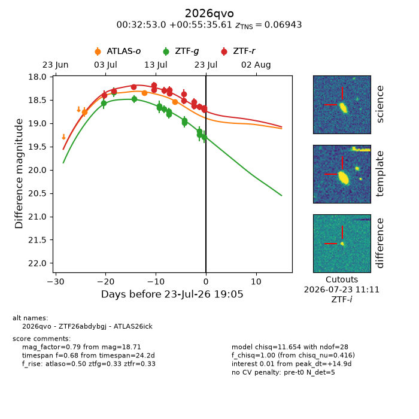
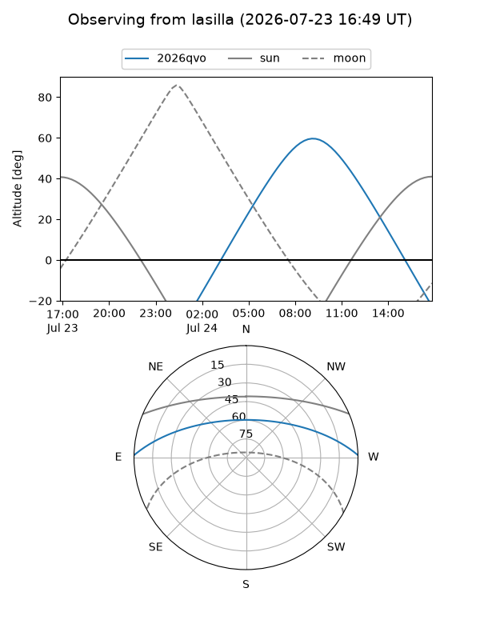
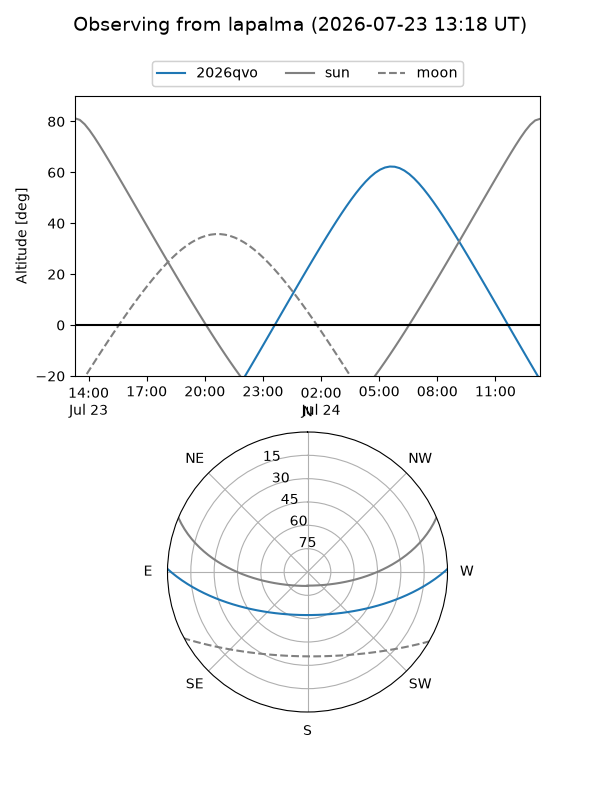
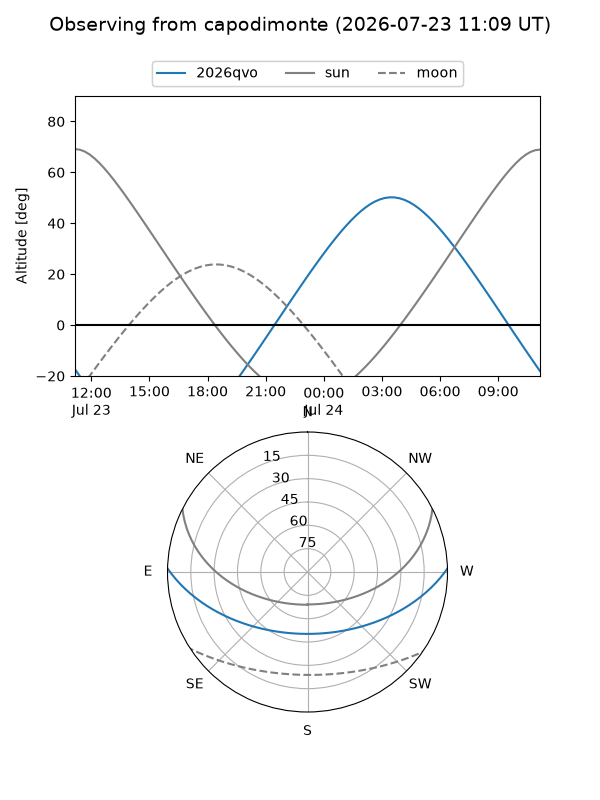
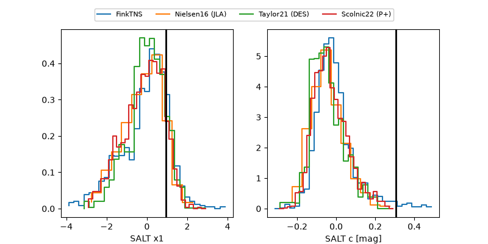

2026qvo
Target 2026qvo at 2026-07-23 19:08
Aliases and brokers:
FINK-ZTF: ztf.fink-portal.org/ZTF26abdybgj
Lasair-ZTF: lasair-ztf.lsst.ac.uk/objects/ZTF26abdybgj
ALeRCE-ZTF: alerce.online/object/ZTF26abdybgj
YSE-PZ: ziggy.ucolick.org/yse/transient_detail/2026qvo
TNS name: wis-tns.org/object/2026qvo
Direct TNS query: direct search
alt names
ZTF26abdybgj (ztf,fink_ztf)
2026qvo (tns,yse)
ATLAS26ick (atlas)
Coordinates:
equatorial (ra, dec) = 8.2210,+0.92656
equatorial (HMS+DMS) = 00:32:53.05,+00:55:35.61
galactic (l, b) = (113.1465,-61.59217)
Flags:
TNS type: SN Ia
TNS redshift: 0.0694
peak dt: +14.9
Photometry:
last atlaso=18.55, ztfg=19.29, ztfr=18.71
3 atlaso, 13 ztfg, 16 ztfr detections
Lightcurve

Visibility



Additional plots
